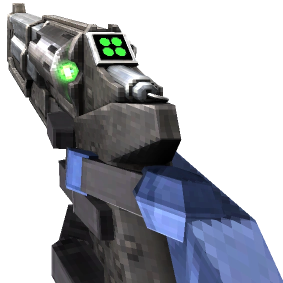
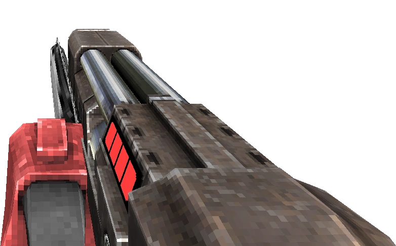
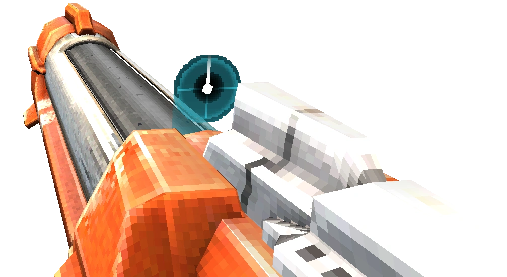

Marksmen Revolver

One of the most well known weapons in the game is the Marksman Revolver.
It has the abilty to fire a coin into the air. If the player then shoots
the coin midair, it will then ricochet and autoaim to the nearest enemy, dealing
bonus damage and giving extra style points as well.
Sawed-on Shotgun

As the name suggests, this gun is a comedic rip off of the well known sawed-off shotgun.
The diffrence here being that this gun comes with a saw strapped to the side.
This weapon is actually a 'alternete' of the regular shotgun, meaning that the player
aquire this weapon through a secret puzzle. It's special ability allows it to fire
a chainsaw will be retracted back to the gun. The player can actually intercept the
chainsaw as it's returning by parrying at the right time, sending the chainsaw right back
at the horde of enemies and inflicting bonus damage.
FreezeFrame

The first weapon in the game that truly allows the player to always
enter the level with a blast is the FreezeFrame rocket launcher.
the player can aqquire this weapon later in the game and use it for both high
damage, dealing with hordes of enemies, and mobility. That's right. This weapon can be
used to move quickly around the map with a technique known as rocket riding.
by using this technique the player can ride the rocket to quickly get to a destination,
or to reach a hidden spot only accessible with this weapon.